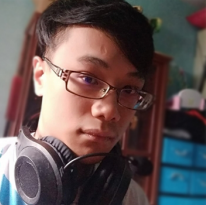

ABOUT ME
TAP / HOVER FOR FULL TEXT

My Name is
Reiyx, a
Malaysian, likes to play games, watch anime, listen to songs, play trading cards, just like a classic Otaku.
Like other Malaysian do, I
understand English and
Malay, with
Chinese as my native Language. Other than that, I self-learn some Japanese due to my interest, and got slightly improved after taking the 3rd Language Course in my University, currently aiming to take the Japanese-Language Proficiency Test N3 exam when it's possible.
About my
Education Journey, I am just an
average student. I started my
primary school on 2006 at Penang,
SJK(C) Kong Min Caw. 2, then proceed to
secondary school at
SMJK Heng Ee since 2012. After I graduate from SPM Science Stream with an average grade of 3A3B4C, I continue my study to
STPM at
Heng Ee Highschool, as an attempt to get into a Local University without spending much. Which then, I obtained a CGPA of 2.98, and accepted the offer to study a
degree of IT in Game Technology at
Universiti Teknikal Malaysia Melaka, UTeM.